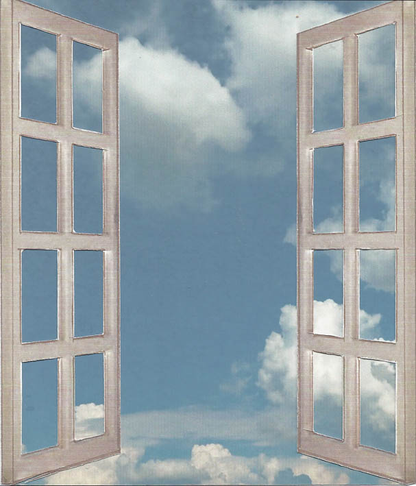

| S'exprimerCommuniquer S'affirmer |
 | par le théâtre par l'écriture par la musique… |
Découvrir son talent propre, non pour y faire carrière
mais pour harmoniser sa vie.
Mieux se connaître et mieux s'exprimer.
Oser l'imagination en confiance et dans le plaisir du jeu,
pour être soi avec les autres, tout simplement.
Bienvenu(e) au Studio Coryphée.
Studio Coryphée, petit espace de libre expression à Troyes, vous accueille dans ses cours et ses ateliers.
- Plaisir du jeu. Dans son Atelier pour jeunes comédiens, Isabelle Haumesser, comédienne et pédagogue, propose aux enfants de 8 à 12 ans de jouer, de partager, de mieux se connaître, de prendre confiance et d'oser utiliser leur imagination pour créer en groupe.
- Travail d'acteur, affirmation de soi, coaching pour la prise de parole… Dans son Atelier de Théâtre, Jean-Marie-Gobry- Valle, homme de théâtre, invite chacune et chacun à un travail sur soi à partir des techniques théâtrales, pour une meilleure maîtrise de son corps, de sa voix, de ses émotions.
- Marie-Ange (Armande) Gobry-Valle, écrivain, met son talent et ses conseils au service de celles et ceux qui souhaitent s'exprimer par l'écrit. Son Atelier d'Écriture est un temps de partage pour développer votre imagination et votre capacité d'invention, dans une recherche de perfection.
- Pour les parents et pour toute personne qui vit ou travaille avec des enfants, les relations sont parfois difficiles. Dans ses séances de Communication Bienveillante, selon la méthode Faber et Mazlish, l'animatrice Chantal Masson vous aide à découvrir une autre façon de communiquer basée sur l'écoute, le respect, la non-violence, la bienveillance.
- La musique, langage privilégié de l'affectivité et des émotions. Dans ses séances de Musicothérapie et de Chant, Morgane Genneret, musicothérapeute et chanteuse, vous invite à vous révéler à vous- même par la voix, par le rythme, par le mouvement ou par la découverte des instruments. L'aventure commence dès le chant prénatal. Pour les parents, pour les enfants, pour tout adulte.